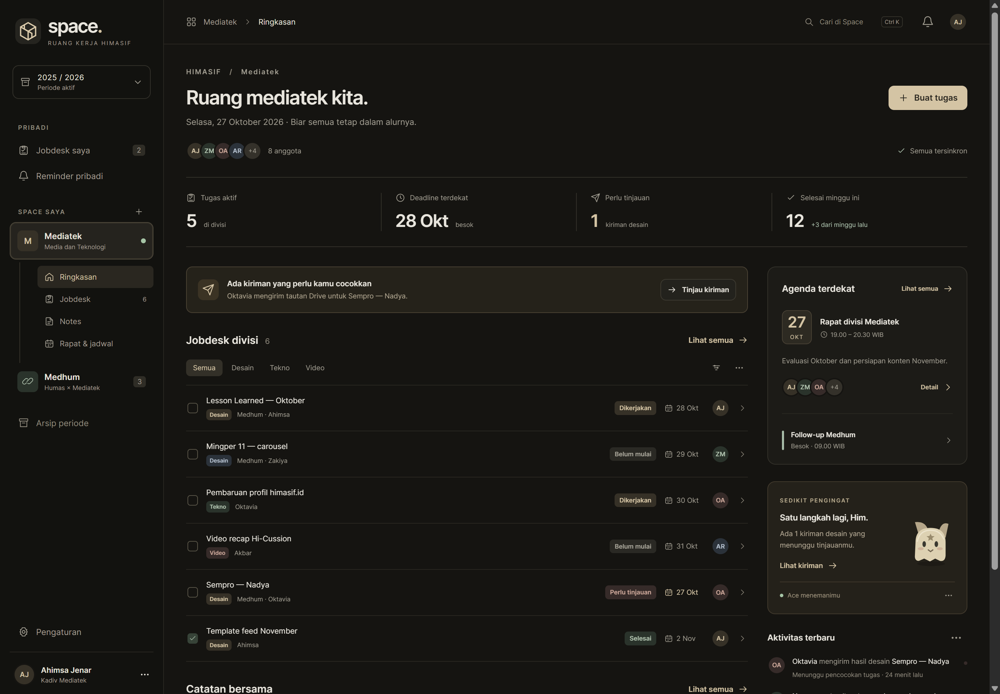
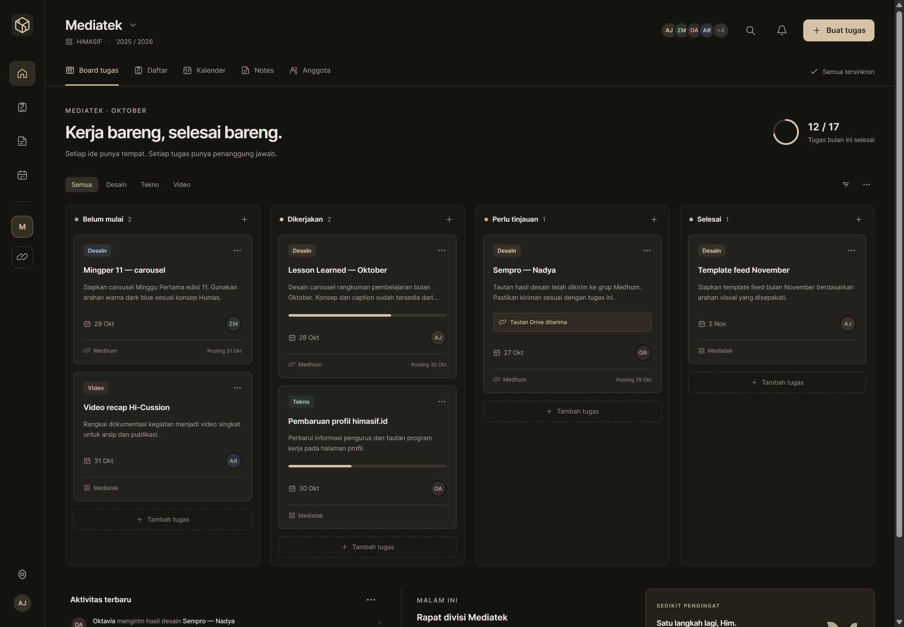
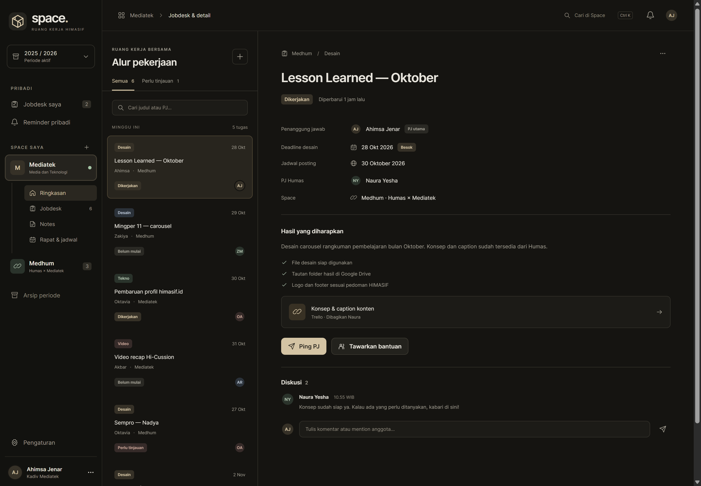
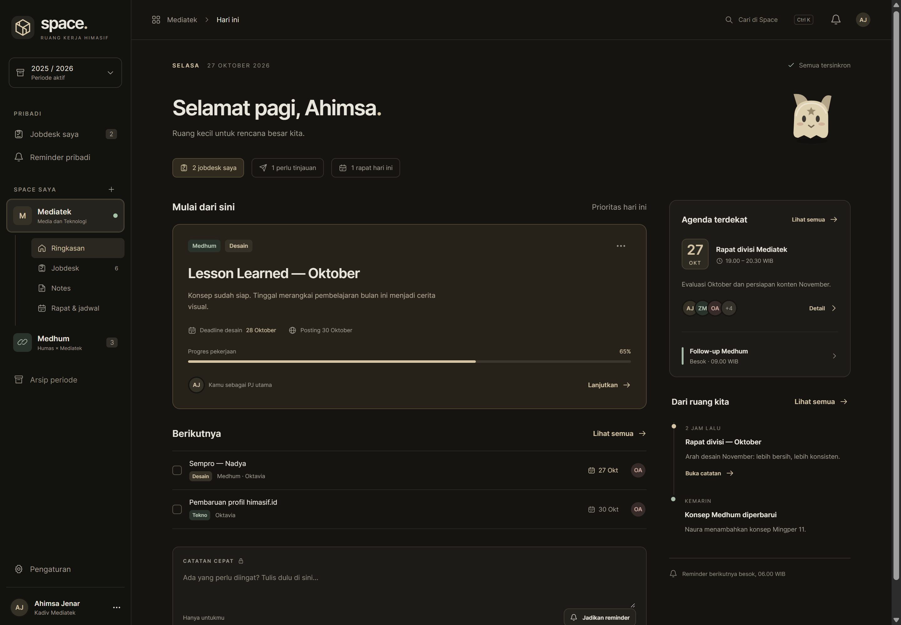
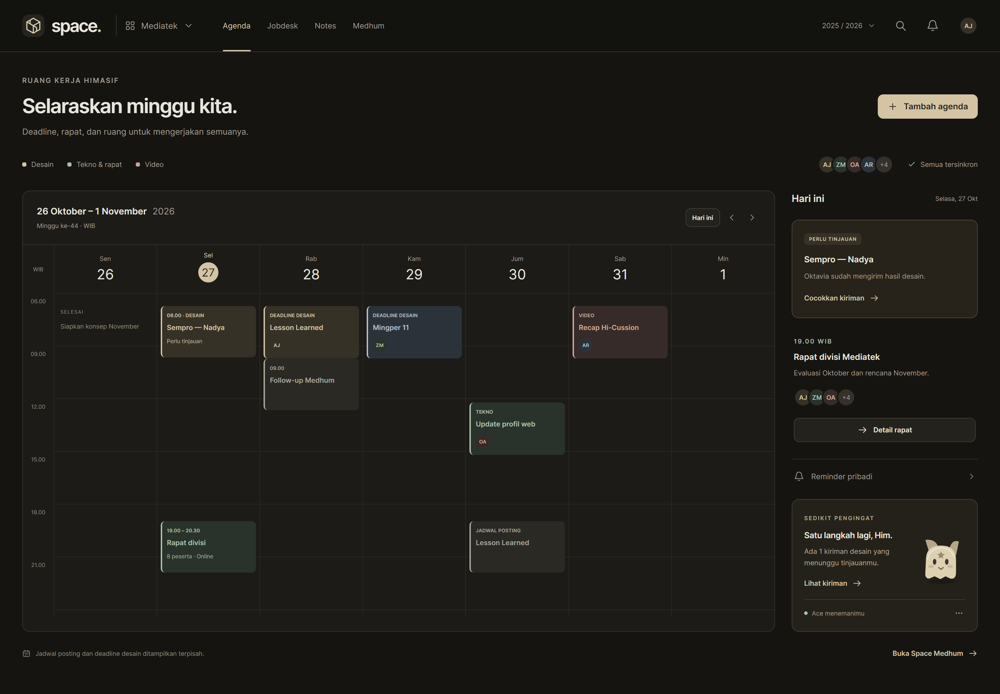

A
Ruang
Paling dekat dengan enowX. Sidebar Space, ringkasan pekerjaan divisi, agenda, dan Ace dalam satu pandangan.
Lima susunan yang berbeda, dengan palet gelap hangat yang sama. Buka tiap alternatif untuk mencoba jobdesk, Medhum, notes, rapat, dan Ace. Kamu juga bisa menggabungkan bagian yang paling kamu suka.

Paling dekat dengan enowX. Sidebar Space, ringkasan pekerjaan divisi, agenda, dan Ace dalam satu pandangan.

Kerja tim terasa visual. Navigasi ringkas dan board tugas untuk melihat siapa mengerjakan apa dan sejauh mana.

Detail tanpa bolak-balik. Daftar dan isi tugas berdampingan, cocok untuk delegasi serta pencocokan kiriman Medhum.

Lebih tenang dan personal. Satu pekerjaan utama, tugas berikutnya, catatan cepat, dan agenda yang tidak berebut perhatian.

Mulai dari waktu. Kalender mingguan menghubungkan deadline desain, jadwal posting, dan rapat, dengan agenda hari ini di sampingnya.